01 / 12
Tu mirada luminosa y esa sonrisa eterna que habita en nuestra alma
Un recuerdo eterno preparado con todo el amor de tu familia. Aquí abajo, tu memoria vive y florece todos los días.
A dos años de tu partida, tu esencia se ha vuelto eterna y tu memoria florece todos los días
“Dicen que el tiempo lo cura todo, pero el tiempo solo aprende a vivir con la ausencia de quienes amamos profundamente. A dos años de tu partida, querida tía, tu presencia sigue habitando en cada rincón de nuestros días: en un recuerdo que nos saca una sonrisa, en un consejo tuyo que repetimos sin darnos cuenta, y en el calor del amor que nos dejaste sembrado en el pecho.”
“Tu paso por nuestras vidas fue un regalo inmenso, y aunque duele no tenerte físicamente, tu esencia se ha vuelto eterna. Te extrañamos con el alma, con esa melancolía bonita de saber que fuiste y siempre serás parte fundamental de lo que somos. Vuela alto, tía; aquí abajo, tu memoria vive y florece todos los días.”
Doce postales de tu historia, tu alegría y el inmenso amor con el que abrazaste a cada uno de nosotros. Toca cualquier fotografía para verla en detalle.
Tu mirada luminosa y esa sonrisa eterna que habita en nuestra alma
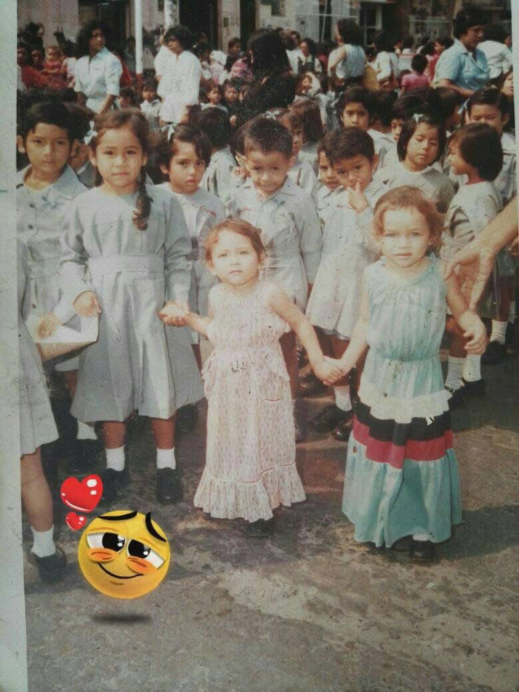
02 / 12Tus primeros pasos llenos de ternura, inocencia y dulzura
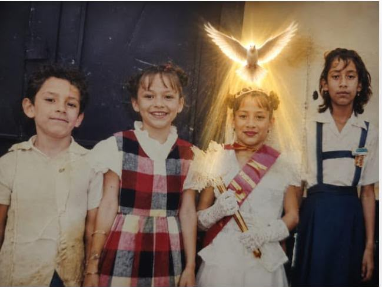
03 / 12Una vida guiada siempre por la fe, la pureza y la luz de Dios
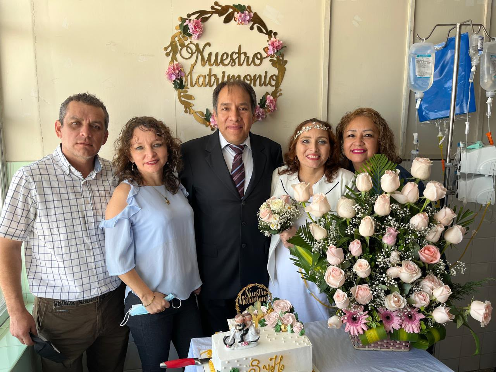
04 / 12El ejemplo de un amor valiente, incondicional y lleno de esperanza
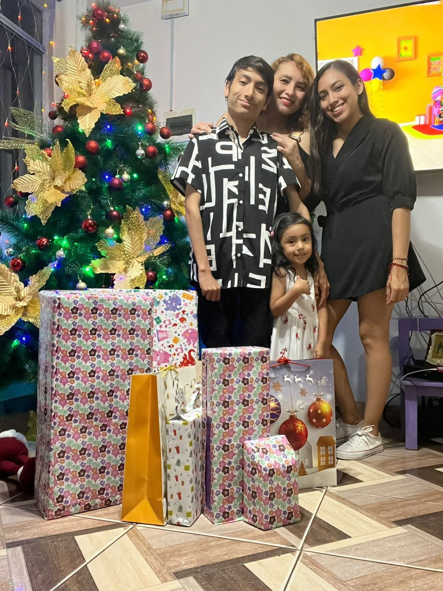
05 / 12La calidez de tus abrazos iluminando cada Navidad en familia
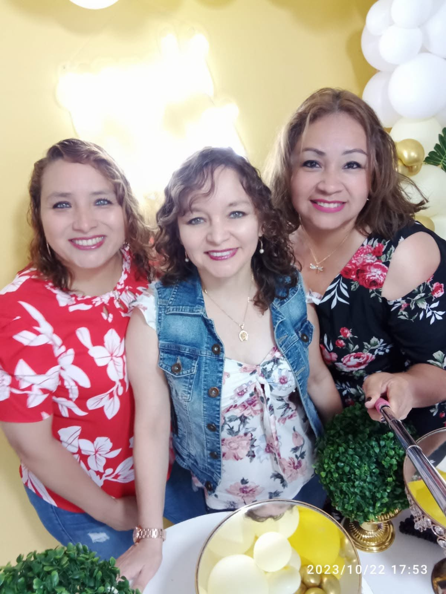
06 / 12Cómplice de risas, consejos sabios y cariño verdadero
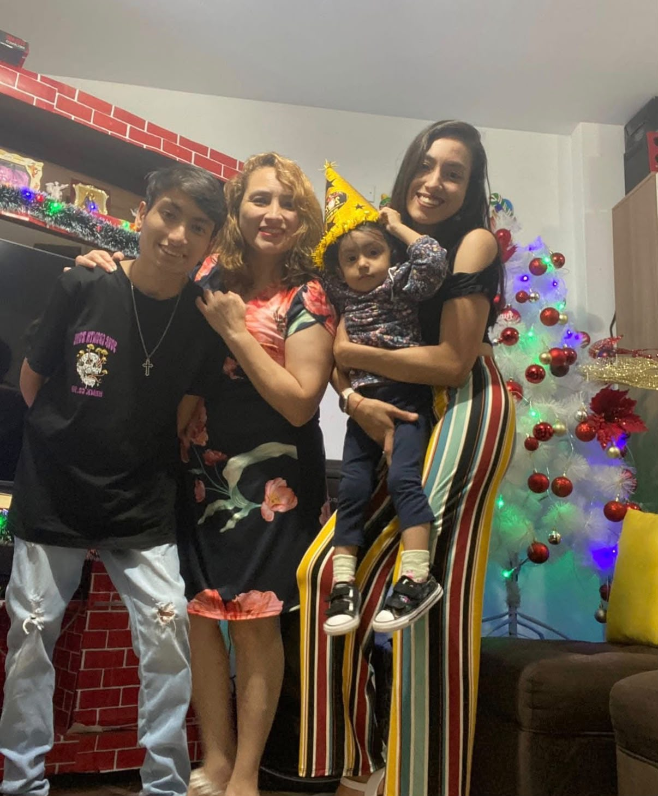
07 / 12Tu presencia haciendo de cada reunión un recuerdo inolvidable
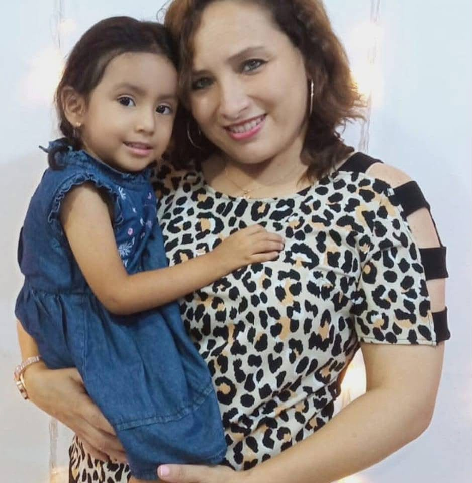
08 / 12El calor del amor más tierno que dejaste sembrado en nuestro pecho
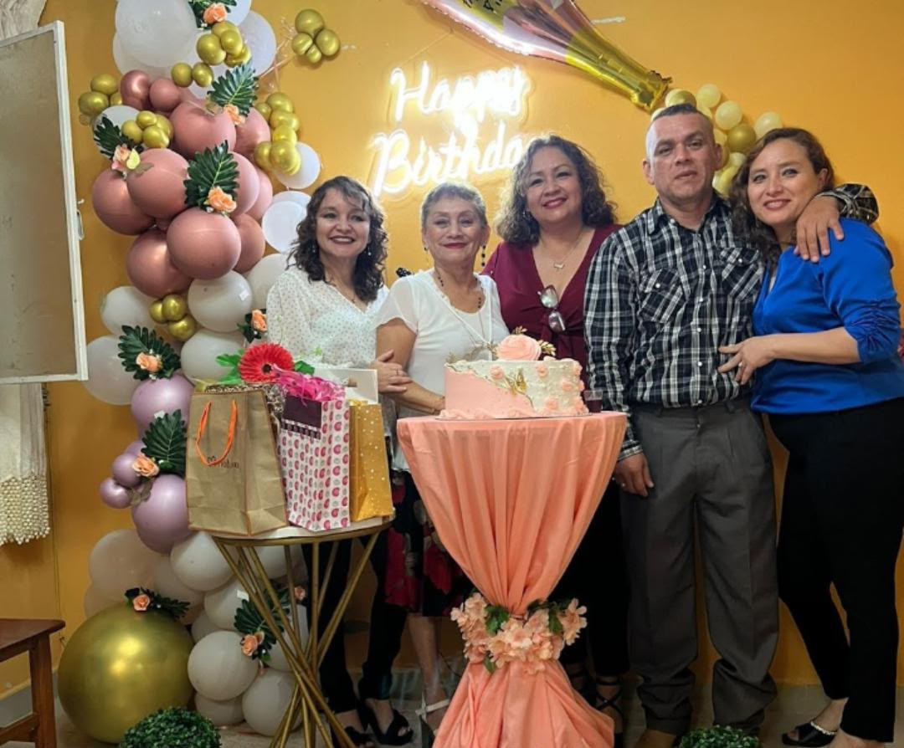
09 / 12Celebrando la dicha inmensa de haber compartido la vida contigo
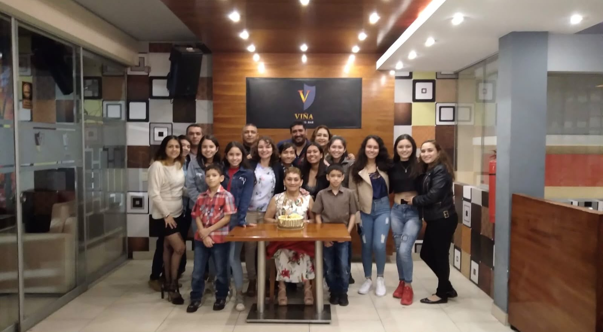
10 / 12Uniendo corazones y generaciones alrededor de nuestra familia
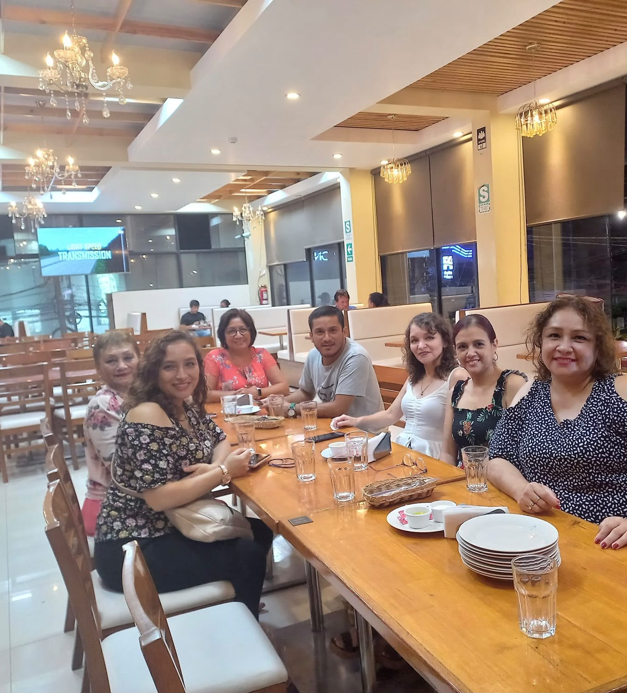
11 / 12Momentos compartidos que hoy atesoramos como un regalo inmenso
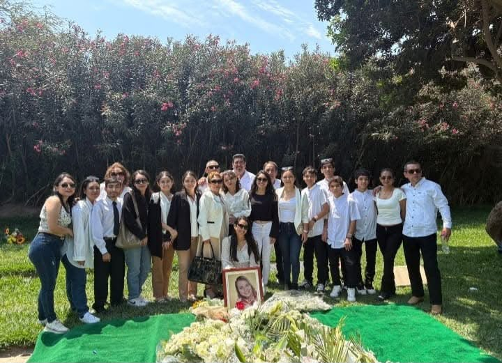
12 / 12Aquí abajo, tu memoria vive, nos une y florece todos los días
“Cuando nos volvamos a encontrar, ya no habrá más tiempo que perder... Ese día, cuánto te diré...”
— Cuando nos volvamos a encontrar • Carlos VivesAl reproducir este video, la música de fondo se apagará automáticamente para que puedas escuchar con claridad este recuerdo tan especial.
«Es imposible conocerte y no amarte... Cuán grande y maravilloso es el amor de Dios»
Toca el botón para elevar un destello de luz y un “Te amo 💕” en su memoria.